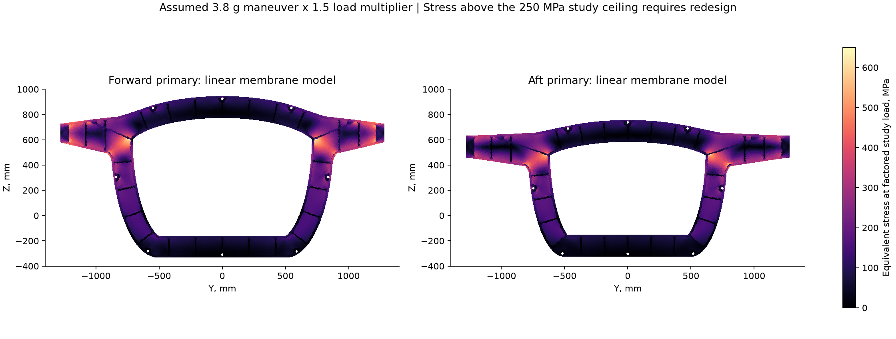
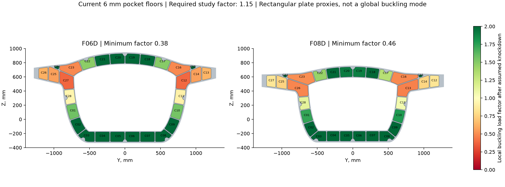
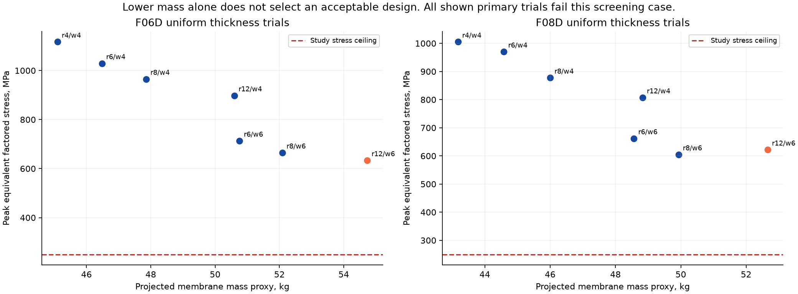
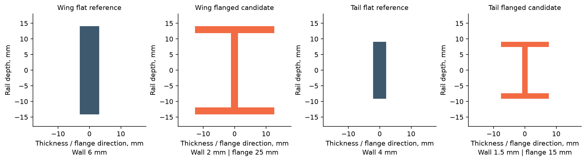
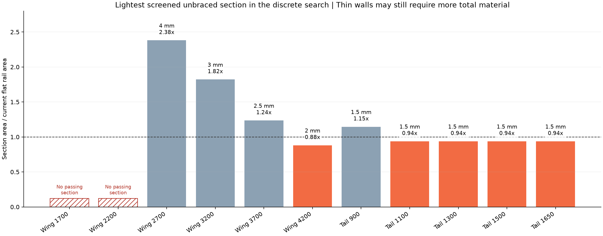
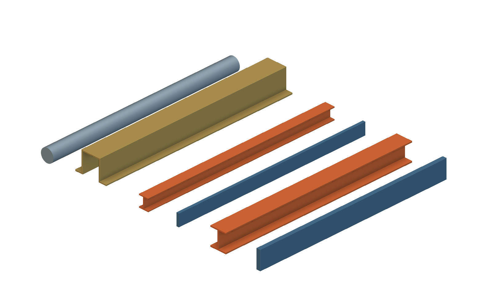
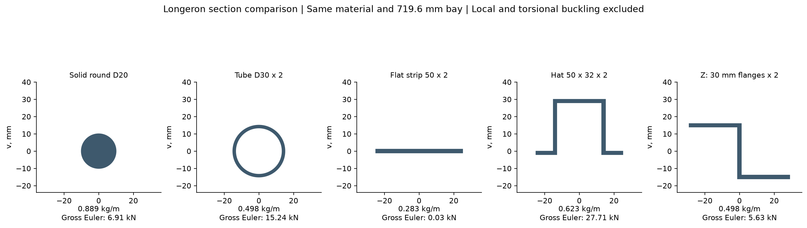

Rib buckling and
longeron sections.
A reproducible first load model, a thickness sweep, and editable native nTop section studies.
The user requested thinner ribs and questioned the round longerons. This study tests those choices against explicit loads and measured geometry.
Result
Uniform thinning does not pass the initial bulkhead screen.
The two primary bulkheads need revised load paths or local reinforcement in the assumed case. Thin flanged sections offer useful candidates for outboard ribs.
The Revision D baseline used solid 20 mm diameter placeholders. Revision E installs hat sections with revised frame passages. These baseline results do not substantiate Revision E.
01Inputs and analysis scope
| Input | Value | Status |
|---|---|---|
| Gross weight | 7,500 lbf = 33.362 kN | User assumption |
| Limit maneuver case | 3.8 g | Analyst assumption; not a certification category |
| Load sensitivity | 2.5, 3.8 and 6.0 g | Analyst assumption |
| Factored load | 1.5 times the limit case | Analyst assumption |
| Wing lift | Elliptical span distribution; both exposed wings carry the full load | Assumption; no fuselage lift or inertial relief |
| Forward / aft load split | 55% / 45% | Assumed split of wing shear and root moment |
| Tail load | 15% of the maneuver load, split equally across the two tails and their ribs | Assumption |
| Elastic properties | E = 71 GPa; Poisson ratio = 0.33 | Assumed isotropic room-temperature values |
| Study stress ceiling | 250 MPa | Assumed screening ceiling, not a forging allowable |
| Density | 2,830 kg/m³ | Same nominal density used in the geometry report |
| Buckling reduction | 0.65 applied to theoretical elastic capacities | Assumed imperfection and restraint allowance |
| Required buckling factor | 1.15 above the factored study load | Assumed screening reserve |
| Skin bracing | Unbraced case and a 150 mm bracing sensitivity | No skin attachment stiffness is modeled |
| Thickness increment | 0.5 mm | Discrete search; not a continuous optimum |
The model reads the actual station profiles, pocket boundaries, passage axes, wing sections, and tail sections from Revision D. It uses millimetres, newtons, and megapascals.
Two-dimensional plane-stress models provide in-plane forces. Classical plate and column calculations then screen local stability. This is not a full-aircraft eigenvalue buckling analysis.
02Primary bulkheads: retain material at the load path
Each wing root applies upward shear and a bending moment at the bulkhead end face. A distributed downward load balances the lower outer rim.
The model balances force and moment before it applies three constraints to remove rigid motion. Pocket floors use 6 mm thickness. Other regions use 60 mm.

| Primary | Elements, 8 mm mesh | Peak limit stress | Peak factored stress | Lowest local buckling factor | Critical pocket | Study result |
|---|---|---|---|---|---|---|
| F06D | 52,067 | 422.1 MPa | 633.2 MPa | 0.38 | C27 | Does not pass |
| F08D | 49,313 | 414.5 MPa | 621.7 MPa | 0.46 | C13 | Does not pass |
The broad shoulder-to-hoop pockets govern this first model. The small upper shoulder pockets are not the governing cells. A uniform reduction would weaken the demanding region too.


The finite-element approximation omits the added stiffness of the rolling-ball blends. It includes projected oblique passage holes and the actual pocket outlines.
For the next geometry iteration, redistribute material locally. Add support across the highly loaded shoulder webs before reducing quiet crown and lower-ring regions.
The analyzed primary bulkheads and STEP files are Revision D. The first analysis does not justify uniform thinning. The current Revision E geometry requires its own structural checks.
03Ribs: thin walls need an efficient section
The current wing and tail ribs are flat rings with large central openings. The analysis assigns the local tributary lift to each ring.
The end webs provide vertical reactions. Section cuts recover axial force, bending moment, and shear in the upper and lower rails.
The search compares flat rails with symmetric I sections. It checks weak-axis Euler buckling, local flange and web buckling, and a section stress ceiling.

| Rib section | Current flat thickness | Measured rail length | Lightest screened unbraced option | Section area / baseline |
|---|---|---|---|---|
| Wing BL 1700 | 6 mm | 886.7 mm | No passing option in search | Pending layout change |
| Wing BL 2200 | 6 mm | 795.0 mm | No passing option in search | Pending layout change |
| Wing BL 2700 | 6 mm | 708.4 mm | 4 mm wall; 40 mm flange | 2.381x |
| Wing BL 3200 | 6 mm | 621.7 mm | 3 mm wall; 40 mm flange | 1.821x |
| Wing BL 3700 | 6 mm | 534.9 mm | 2.5 mm wall; 30 mm flange | 1.235x |
| Wing BL 4200 | 6 mm | 448.1 mm | 2 mm wall; 25 mm flange | 0.881x |
| Tail BL 900 | 4 mm | 442.2 mm | 1.5 mm wall; 20 mm flange | 1.146x |
| Tail BL 1100 | 4 mm | 399.6 mm | 1.5 mm wall; 15 mm flange | 0.938x |
| Tail BL 1300 | 4 mm | 356.6 mm | 1.5 mm wall; 15 mm flange | 0.938x |
| Tail BL 1500 | 4 mm | 313.6 mm | 1.5 mm wall; 15 mm flange | 0.938x |
| Tail BL 1650 | 4 mm | 272.6 mm | 1.5 mm wall; 15 mm flange | 0.938x |

The 2 mm wing-tip section uses 25 mm flanges. Its straight-section area is 148 mm², compared with 168 mm² for the 6 mm flat rail.
The 1.5 mm tail section uses 15 mm flanges. Its area is 67.5 mm², compared with 72 mm² for the 4 mm flat rail.
These changes reduce section area by 11.9% and 6.25%. They do not establish the mass of a completed curved rib, its fittings, or its manufacturing stock.
Check the changed stiffness
| Candidate | Updated mesh | Factored section stress | Euler factor | Local plate factor |
|---|---|---|---|---|
| Wing BL 4200 | 2 mm | 191.3 MPa | 1.87 | 2.90 |
| Wing BL 4200 | 1 mm | 164.6 MPa | 2.53 | 3.37 |
| Tail BL 1500 | 2 mm | 163.8 MPa | 1.49 | 5.52 |
| Tail BL 1500 | 1 mm | 133.6 MPa | 2.30 | 6.77 |
The second calculation adds the proposed flange stiffness to each two-dimensional ring. Both candidates pass these reduced checks on the two reported meshes.
Recovered local forces still vary with mesh refinement. The tables retain both results. Full curved-rib shell analysis and lateral-torsional buckling remain required.
The inboard wing rings need a more efficient layout, such as supported thin webs or shorter load paths. A thinner unsupported flat ring does not solve that problem.
The native files below are editable straight coupons. They do not replace the ribs in the aircraft. The wider wing-tip flange also needs an extended spar end and new fit checks.

04Longerons are not flat shear panels
The eight round members in the analyzed Revision D aircraft are solid 20 mm diameter layout placeholders. They have no hollow bore.
A longeron carries longitudinal axial load and can carry bending. A skin or shear panel carries distributed shear and helps stabilize its neighboring members.
Thin-wall hat, Z, channel, or built-up sections can provide section depth and a skin attachment surface. A flat strip needs adequate lateral support.
Construction reference: FAA AC 65-15A, Airframe Handbook.

| Section | Area | Mass per metre | Reduced gross Euler load |
|---|---|---|---|
| Solid round D20 | 314.1 mm² | 0.889 kg/m | 6.908 kN |
| Tube D30 x 2 | 175.9 mm² | 0.498 kg/m | 15.241 kN |
| Flat strip 50 x 2 | 100.0 mm² | 0.283 kg/m | 0.029 kN |
| Hat 50 x 32 x 2 | 220.0 mm² | 0.623 kg/m | 27.713 kN |
| Z 30 x 32 x 2 | 176.0 mm² | 0.498 kg/m | 5.631 kN |
The proposed hat example uses 30.0% less material per metre than the solid round placeholder. Its gross weak-axis inertia is 4.01 times higher.
This comparison does not select a flight-ready longeron. It has no assigned axial demand, local buckling assessment, or validated skin restraint.
A hat profile will need different frame cutouts, attachment lands, and splice details. It cannot use the current round passages unchanged.
05Verification and important limits
| Check | Result | Scope |
|---|---|---|
| Membrane patch test | Maximum stress error 3.18e-12 MPa | Exact uniform-traction solution; matrix assembly, solve and stress recovery |
| Plate eigenvalue benchmark | Three compression cases match analytical values within 1e-10 relative error | Simply supported sine-series Ritz plates |
| Column eigenvalue benchmark | 16-element relative error 2.06e-06 | Pinned Euler beam |
| Shear plate convergence | Ritz coefficient 5.5307 | Aspect ratio five; long-plate approximation 5.50 |
| Primary mesh sequence | 20, 12 and 8 mm | Displacement and energy stabilize; local peak stresses remain approximate |
| Rib mesh sequence | Initial 8 mm, then 2 mm; selected 1 mm checks | Coarse force results were retained before refinement |
| Load accounting | Wing and tail sums match their assigned loads | No missing tributary wing bay in this reduced model |
| Native section checks | 36 checks pass | Thin I-section material and voids at two parameter sets |
| Native file checks | Three custom part definitions and six displayed coupons | Dimensioned inputs, native readback, GUI states and implicit renders |
For pocket webs, the model uses D = Et³/[12(1−ν²)] and elastic capacities proportional to D/b². It uses the long-plate coefficient minima.
The compression and shear screen uses Rc + Rs² = 1. The cross-rib proxy uses an outstanding-plate coefficient of 0.43.
The assumed reduction factor does not replace a measured imperfection or a nonlinear calculation. No postbuckling reserve is credited.
Theory references: NACA TN 3781, Handbook of Structural Stability Part I: Buckling of Flat Plates, NACA TN 1750, Buckling Tests of Flat Rectangular Plates under Combined Shear and Longitudinal Compression, NACA TR 734, Critical Compressive Stress for Outstanding Flanges.
Full-aircraft load sharing, skin stiffness, combined maneuver and gust envelopes, global lateral buckling, fatigue, fasteners, bearing, damage tolerance, and manufacturing release remain open.
06Reproduce and extend the workflow
The host calculation uses Python, NumPy, SciPy, Shapely and Triangle. nTop builds and verifies the separate native geometry. It does not solve the current stress model.
- Edit the weight, loads, material, restraint, and search limits in buckling/assumptions.json.
- Run the numerical study and review failed cases before selecting geometry.
- Run the patch test, mesh checks, and candidate stiffness reanalysis.
- Build candidate native parts with a unique run label. Verify their fields and interfaces.
- Regenerate the figures and this report.
- Promote a part to the aircraft only after broader structural checks and new assembly contact checks pass.
uv run --with-requirements CivilResearchAircraft/buckling/requirements.txt python CivilResearchAircraft/scripts/run_buckling_study.py
uv run --with-requirements CivilResearchAircraft/buckling/requirements.txt python CivilResearchAircraft/scripts/check_buckling_workflow.py
uv run --with-requirements CivilResearchAircraft/buckling/requirements.txt python CivilResearchAircraft/scripts/reanalyze_thin_ribs.py
uv run --with-requirements CivilResearchAircraft/buckling/requirements.txt python CivilResearchAircraft/scripts/plot_buckling_results.py
uv run --with-requirements CivilResearchAircraft/buckling/requirements.txt python CivilResearchAircraft/scripts/build_buckling_report.pyThe full default numerical sweep took 26.6 seconds in the retained run. This excludes extra verification, native model builds, rendering, and report work.
This analysis retains the fitted Revision D geometry. The current aircraft model is Revision E with installed hat longerons. These section files remain a separate first sizing study.